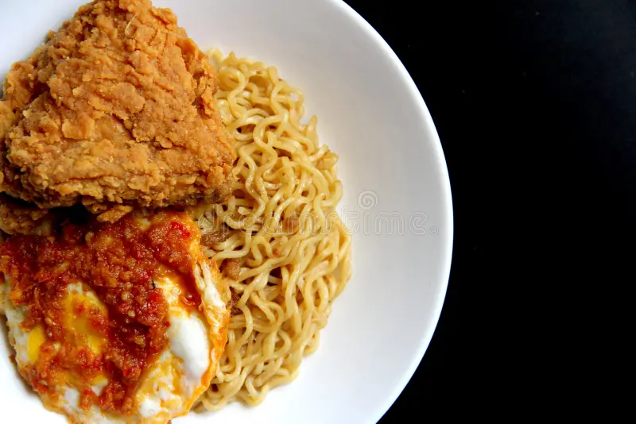

TASTY FRIED INSTANT NOODLES
Tasty Fried Instant Noodles is a conventional dish made with quality instant noodles and richly prepared fried eggs. It’s perfect for a fast prepration which is most suitable for bruch, campus students and a cozy dinner. It can be customized with your favorite protein filling, but mostly said to go best with chicken laps.

Recipe Information
Preparation time: 7 minutes
Cooking time: 15 minutes
Servings: 2
Difficulty level: Intermediate
Ingredients
- 280g Bellefull Indomie Noodles
- 3 tbsp olive oil
- 1 medium onion, finely chopped
- 2 cloves garlic, minced
- 400g chicken
- 4 Eggs
- 1/4 tsp dried Ground Chilli Pepper
- 1 small carrot, julienned (optional)
- A handful of chopped green pepper/spring onion (optional)
- Fresh Lettuce
Instructions
Prepare Chicken (if its your choice)
Transfer chicken to a plate; keep warm.
Boil the noodles (2–3 min)
Bring \~350–400 ml water to a boil in a small pot.
Add noodles; cook 2 minutes (just shy of fully soft).
Reserve 2–3 tbsp pasta water, then drain the noodles.
Quick stir-fry (Indomie-style, 1–2 min)
In the same pan you used for chicken, add 1 tsp oil if needed.
Sauté onion, carrot, and pepper (if using) for 30–45 seconds.
Add the drained noodles, the seasoning sachet(s), and a splash of the reserved noodle water.
Toss for 30–60 seconds until glossy and well-coated. Taste and adjust (a pinch of salt or a dash of soy sauce if you like).
Fry the egg (1–3 min)
Assemble & serve (30 sec)
Plate the noodles, top with the fried egg, add the chicken strips.
Garnish with spring onion or suya spice/ata rodo if you like a kick.
Tips
Safety: Cook chicken to 74 °C (165 °F). Avoid cross-contamination (use separate board/knife for raw chicken; wash hands).
Make it healthier: Add quick veggies (carrot, green peas, bell pepper, cabbage).
Extra flavor: A knob of butter, a dash of soy sauce, or a squeeze of lime at the end is lovely.
For extra flavor, add a splash of red wine when cooking the beef/chicken. You can also use fresh basil for garnish to enhance the taste and presentation.